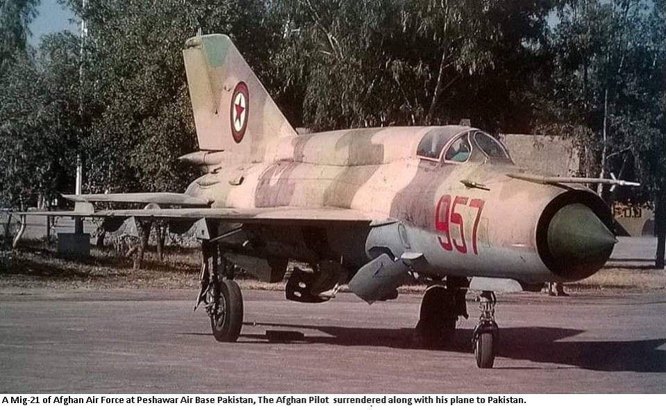

O Armamento da Luta de Libertação (1963–1974)
O apoio da União Soviética, Cuba e China foi decisivo. As armas que mudaram o rumo da guerra foram:
Míssil Terra-Ar Strela-2 (SAM-7): Esta foi a "arma da vitória". Em 1973, as FARP começaram a abater aviões e helicópteros portugueses (os Fiats e Alouettes). Isso tirou a superioridade aérea de Portugal e acelerou o fim da guerra.
Espingarda de Assalto AK-47 (Kashnikov): A arma padrão do guerrilheiro guineense. Robusta e ideal para a humidade do mato e do lodo da Guiné.
Lança-Granadas RPG-2 e RPG-7: Essenciais para emboscadas a colunas militares portuguesas e destruição de blindados.
Artilharia Ligeira: Canhões sem recuo de 75mm e morteiros de 82mm, usados para atacar os aquartelamentos portugueses à distância.
O Arsenal Blindado e Pesado
Após a independência, a Guiné-Bissau herdou ou comprou equipamentos mais pesados, embora muitos hoje estejam com manutenção limitada:

Missil Terra-Ar ideial para defesa ante-aerea contra avioes

Tanques T-34 e T-54/55: Tanques soviéticos
clássicos que formaram o núcleo blindado

Blindados sobre rodas: BRDM-2 (reconhecimento)
e BTR-40/60 (transporte de tropas)
Veículos PT-76: Tanques anfíbios, ideais
para um país cheio de rios e zonas alagadas
Força Aérea e Marinha

Aeronaves: No passado, o país operou caças MiG-17 e MiG-21. Atualmente, a força aérea é muito reduzida, focando-se mais em transporte e helicópteros (como o Mi-8), embora a maioria esteja
Marinha (Armada): Composta por lanchas de patrulha costeira (cedidas pela China, Espanha ou França em diferentes épocas) para fiscalizar a pesca ilegal e o narcotráfico.
O Problema das "Armas Ligeiras"
Um dos grandes desafios atuais na Guiné-Bissau é o excesso de armas ligeiras (pistolas e AK-47) que ficaram nas mãos da população e de militares após a Guerra Civil de 1998.
Curiosidade: O desarmamento e a recolha destas armas são, até hoje, uma das principais missões das organizações internacionais (como a ONU e a CEDEAO) no país.